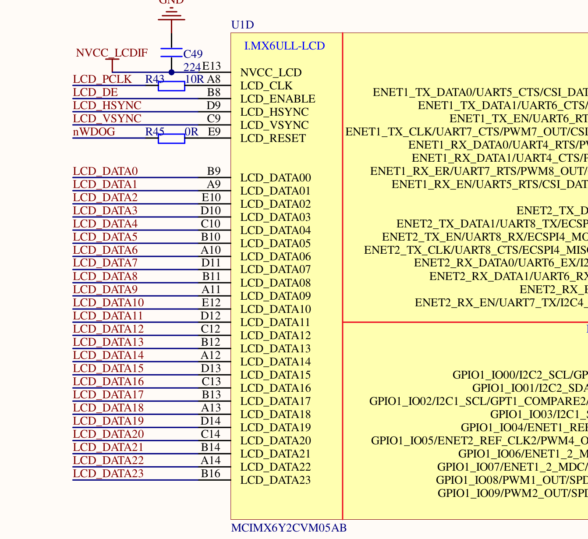
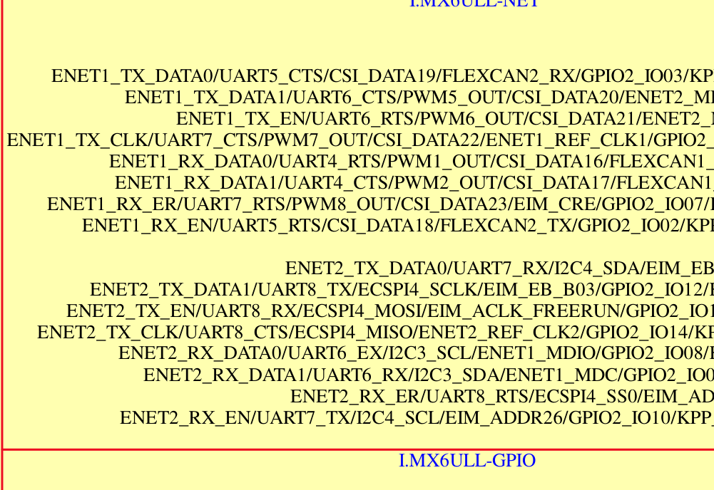

核心板第 5 页：LCD、两路以太网、GPIO、USB、SD1
这一页（IMX6ULL_CORE_LCDNET.SchDoc）是「接口密集页」：左边 24 位 LCD，中间两路以太网，右边 GPIO 与 USB/SD，底部 ADC。四个区块的共同问题是同一个：哪些线要串阻、串多大、为什么。看懂这一页，你就掌握了「时钟线串阻、数据线直连」这条通用规则。

新窗口打开读完这一章，你应该能
- 说清 RGB LCD 的 PCLK/DE/HSYNC/VSYNC 四根控制线各自作用，以及像素时钟怎么算
- 解释「只有 PCLK 串 10Ω、数据线不串」的原因
- 列出 RMII 接口的 7 根关键信号与 25MHz 参考时钟的走向
- 区分 GPIO1_IOxx 与 SNVS_TAMPERxx 的电源域差异
- 说明 USB 的 VDD_USB_CAP 与 CHD 脚为什么这样接
3.6.1LCD：24 位并行的「老式但可靠」
i.MX6ULL 的 LCDIF 输出 RGB888 24 位，一次并行送出 3 个字节。除了数据，还有 4 根时序线：
| 信号 | 球 | 作用 | 极性 |
|---|---|---|---|
| LCD_CLK（PCLK） | A8 | 像素时钟，每个沿送一个像素 | 由 LCDIF 分频产生 |
| LCD_ENABLE（DE） | B8 | 数据有效窗口，高电平时数据才被接收 | 高有效 |
| LCD_HSYNC | D9 | 行同步，标志一行开始 | 极性可配 |
| LCD_VSYNC | C9 | 场同步，标志一帧开始 | 极性可配 |
| LCD_RESET | E9 | 屏复位（多数屏低有效） | 低有效 |
像素时钟的算法（以 800×480@60Hz 为例）：
PCLK = (HFP+HSW+HBP+800) × (VFP+VSW+VBP+480) × 60
代入常见参数（H: 40/48/40，V: 13/3/29）：(928)×(525)×60 ≈ 29.2MHz。这就是为什么 LCD 的 PCLK 要串 10Ω：30MHz 的方波在 50Ω 走线上很容易振铃，串 10Ω 后边沿变缓、过冲减小，而 30MHz 周期 33ns，多 0.6ns 完全无碍。
3.6.2为什么只串 PCLK，不串 24 根数据
三个原因，缺一不可：
- 时钟是「采样基准」：数据线只要在 PCLK 的沿上稳定即可，轻微的边沿差异不影响判决；而 PCLK 自己振铃会让采样沿位置飘，所有数据一起出错。
- 数量代价：24 根数据各串一颗电阻，PCB 面积与成本都不可接受；一颗 PCLK 电阻就能改善整组时序。
- 数据线是「准静态」：30MHz 下数据在一行内基本不变（大面积同色），真正的翻转集中在少数位置，振铃概率低于时钟。
这条规则同样适用于 SD1_CLK（R28 10R）与 ENET 的 TX_CLK（R44 10R）——凡是「送出后要被别人采样的时钟」，都考虑串 10–33Ω。
3.6.3以太网：RMII 的 7 根线

新窗口打开RMII（Reduced MII）只有 7 根信号 + 1 根 50MHz 参考时钟：
| 信号 | 方向 | 说明 |
|---|---|---|
| TXD0/TXD1 | MAC → PHY | 2 位发送数据（RMII 用 2 位，10/100M 复用） |
| TXEN | MAC → PHY | 发送使能 |
| TX_CLK | PHY → MAC 或外部 50MHz | 发送时钟，核心板用 25MHz 晶振 ×2 或 PHY 内部 PLL |
| RXD0/RXD1 | PHY → MAC | 2 位接收数据 |
| CRS_DV | PHY → MAC | 载波检测/数据有效复用 |
| RXER | PHY → MAC | 接收错误（RMII 可选） |
核心板把两路以太网的引脚都引到 60pin，底板决定用哪路：MINI 底板用 ENET2（配 SR8201F），另一路留给扩展。这也解释了为什么核心板要画 ENET1 和 ENET2 两套——核心板做「全引出」，底板做「选一路」。
3.6.4GPIO 与 SNVS_TAMPER：两个电源域
这一页右侧的 GPIO 是 GPIO1_IO00–09（球 K13/L15/L14/L17/M16/M17/K17/L16/N17/M15），供电 NVCC_GPIO（J13），3.3V 域，可以关断。SNVS_TAMPER0–9 则属于 SNVS 常电域，主电源断了仍然有效——所以它们被用来做「唤醒源」（按键唤醒、ACC 检测）。
看图判断电源域的方法：看这一组球附近有没有独立的 NVCC_xxx 网络。有 NVCC_GPIO 就是可关断域；挂在 VDD_SNVS 上就是常电域。混用会出两种怪现象：常电域信号送进断电域芯片 → 漏电/闩锁；断电域信号送进常电域 → 电平不确定导致误唤醒。
图上还把这些 GPIO 的复用功能全部标出，例如 GPIO1_IO00/I2C2_SCL/GPT1_CAPTURE1/ANATOP_OTG1_ID/ENET1_REF_CLK1/MQS_RGHT。读的时候按「当前项目用哪个功能」取一根，不要以为六个功能同时在跑。
3.6.5USB：VBUS 与 CHD 的特殊接法
USB 部分有三个容易看错的脚：
- USB_OTG1_VBUS（T12）：这是「检测 VBUS 是否存在」的输入，不是给 SoC 供电。外接 5V 经分压/限流后接入，SoC 据此判断「插了主机还是插了设备」。
- VDD_USB_CAP（R12）：内部 USB PHY 的稳压输出，只接电容（C6 22µF + C5/C7/C8 104）。同 CAP 脚规则，绝不能外部供电。
- USB_OTG1_CHD（U16）：Charger Detect，用于识别充电器类型（DCP/CDP/SDP），决定允许抽取多大电流。底板把它引到 Type-C 的 CC/检测电路。
USB_OTG1_DP/DN（U15/T15）、OTG2（U13/T13）是差分对，要求 90Ω 差分、等长；ESD 保护放在连接器侧（底板），核心板只负责走线。
3.6.6SD1 与 ADC
SD1（USDHC1）：SD1_CLK 经 R28 10R 串阻，SD1_CMD/DATA0–3 直连；NVCC_SD1（C4）由 NVCC_SD 供电（可在 3.3/1.8V 间切换，见 3.2 节 U9）。C9（18pF/DNP）是预留的时钟负载电容，用于调时钟边沿——DNP 表示默认不贴。
ADC：VDDA_ADC_3P3（L13）与 ADC_VREFH（M13）都接 3.3V，旁挂 C10 104。ADC 的参考就是 VDDA，所以 3.3V 的噪声直接变成 ADC 噪声；做精密采样时这一脚要单独 LC 滤波，本板只放了 104（够 10 位 SAR 用）。
3.6.7故障判据
| 现象 | 先测 | 判据 | 结论 |
|---|---|---|---|
| 屏花屏/条纹 | PCLK 波形 | 30MHz 方波、过冲 <0.3V | 过冲大 → R43 虚焊或走线过长 |
| 屏全黑但有背光 | DE/HSYNC/VSYNC | 有脉冲 | 无脉冲 → LCDIF 未使能或屏复位未释放 |
| 网口不通 | TX_CLK | 25/50MHz | 无时钟 → PHY 未起振或 R44 开路 |
| 网口丢包 | CRS_DV 与 RXD | 有随包脉冲 | 无 → RMII 模式配置错（PHY 的 RX_DV 跳线） |
| USB 不识别 | VBUS 检测脚 | 插线后 >1V | 0V → 分压电阻开路，SoC 认为「没插」 |
| SD 卡不识别 | SD1_CLK | 50MHz 有波形 | 无 → 时钟未使能；有 → 查 CMD 上拉 |